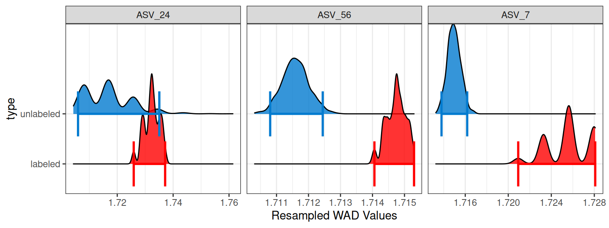
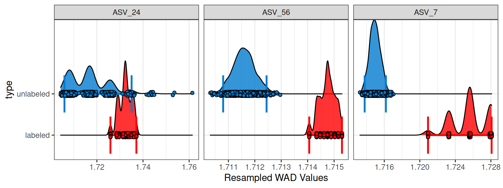
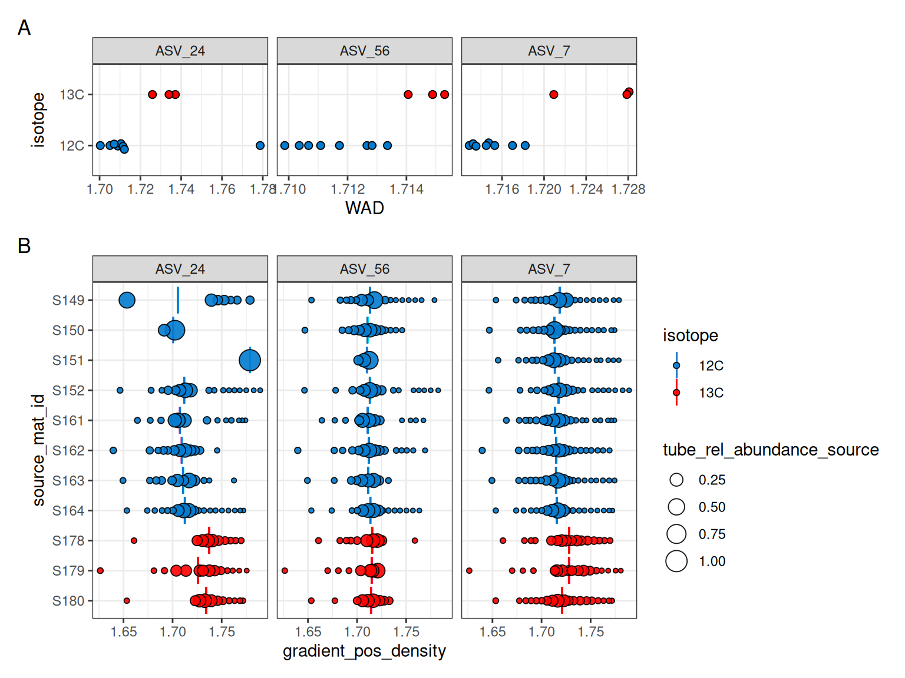
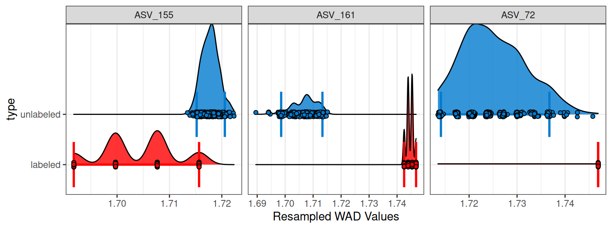
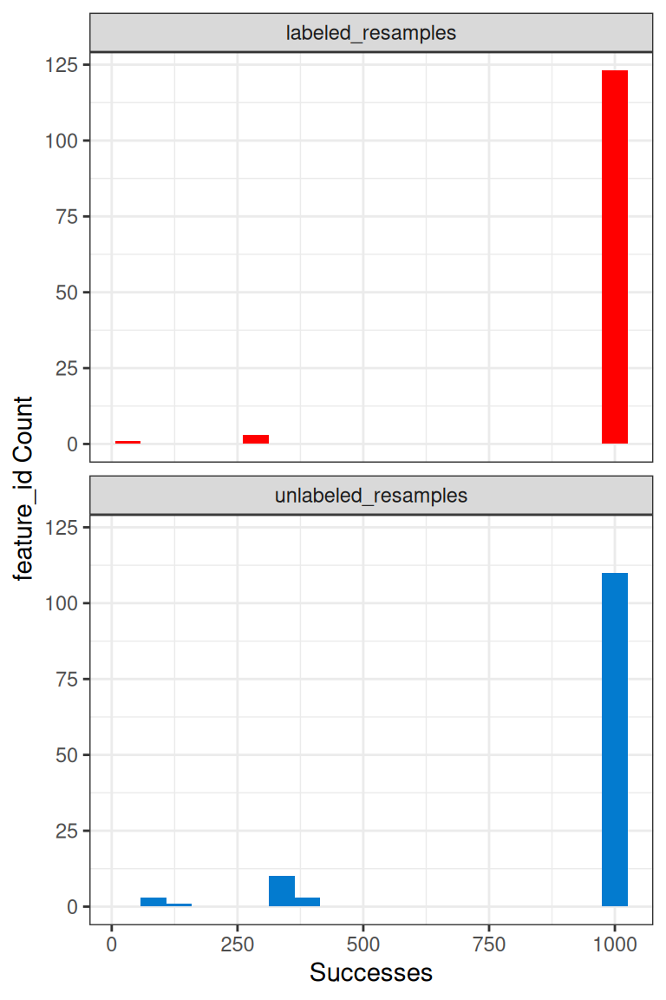
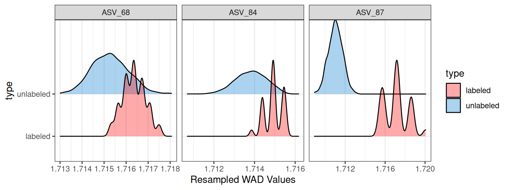

Background
In qSIP2, we use resampling of weighted average densities (WADs) to estimate confidence intervals both within replicate groups (unlabeled vs. labeled) and for the shift in mean WADs between these groups. This is done using a simple bootstrap procedure, where the source WADs for each feature_id are repeatedly sampled with replacement \(n\) times.
Resampling in R
Let’s assume a WAD dataset of 4 sources labeled A–D.
WADs <- c(A = 1.679, B = 1.691, C = 1.692, D = 1.703)To generate a bootstrap replicate, we sample these values with replacement until we obtain a new sample of the same size. Because sampling is done with replacement, some values may be selected more than once, while others may not be selected at all.
For example, a single bootstrap replicate might look like this:
| draw_1 | draw_2 | draw_3 | draw_4 |
|---|---|---|---|
| B | D | A | B |
We can repeat this process \(n\) times to generate multiple bootstrap replicates:
| bootstrap | draw_1 | draw_2 | draw_3 | draw_4 |
|---|---|---|---|---|
| 1 | A | C | B | B |
| 2 | A | B | A | A |
| 3 | C | A | D | C |
| 4 | D | B | A | D |
| 5 | D | A | A | C |
Each row represents one bootstrap replicate, and each column (draw_1–draw_4) corresponds to a draw from the original data. This format makes it clear that resampling is simply repeated random sampling with replacement, where duplicates can occur naturally.
qSIP2 resampling
The qSIP2 package has a function called run_resampling() that will perform the resampling procedure on a filtered qSIP_data object. This object must first be filtered with the run_feature_filter() function, and we’ll come back to how this filtering affects the resampling in a bit.
q <- run_feature_filter(example_qsip_object,
unlabeled_source_mat_ids = get_all_by_isotope(example_qsip_object, "12C"),
labeled_source_mat_ids = c("S178", "S179", "S180"),
min_unlabeled_sources = 3,
min_labeled_sources = 3,
min_unlabeled_fractions = 6,
min_labeled_fractions = 6,
quiet = TRUE # running with quiet = TRUE to suppress messages
)
q <- run_resampling(q,
resamples = 1000,
with_seed = 19,
progress = FALSE
)
#> Warning: 7 unlabeled and 0 labeled feature_ids had resampling failures.
#> ℹ Run `get_resample_counts()` or `plot_successful_resamples()` on your
#> <qsip_data> object to inspect.Setting resamples = 1000 will give 1000 resamplings for each feature. The resampling is not a deterministic procedure, and so the use of a seed is recommended using the with_seed argument.
Under the hood
Internally, the qSIP2 code has a function that is called that makes the resampling output a bit more tidy. It does this by removing the original names and prepending them with the type. So, if the data was the “labeled” type, then resampled values will be in columns labeled_1, labeled_2, etc. It will also keep the data tidy by adding additional columns that are useful.
| feature_id | type | resample | labeled_1 | labeled_2 | labeled_3 | labeled_4 |
|---|---|---|---|---|---|---|
| 1 | labeled | 1 | 1.692 | 1.692 | 1.692 | 1.679 |
| 1 | labeled | 2 | 1.692 | 1.692 | 1.691 | 1.692 |
| 1 | labeled | 3 | 1.692 | 1.679 | 1.692 | 1.691 |
| 1 | labeled | 4 | 1.691 | 1.692 | 1.692 | 1.691 |
| 1 | labeled | 5 | 1.691 | 1.691 | 1.692 | 1.691 |
Note: Each resampling produces a different set of draws, but within a given resample the same draws are applied to all features. For example, if resample #1 yields A A C D, those same WAD values are used for every feature in that resample. This behavior can have consequences, discussed below.
Inspect resample results
The resampling results are stored in the qSIP_data object in the @resamples slot, but they are not necessarily intended to be worked with directly. Instead, the qSIP_data object has helper functions like n_resamples() and resample_seed() that will return the number of resamples that were performed and the seed that was used, respectively.
n_resamples(q)
#> [1] 1000
resample_seed(q)
#> [1] 19If you want the data itself, you can access it with the get_resample_data() function and appropriate arguments (Table 4). Note, if you set pivot = TRUE the dataframe can be quite large and take a while to assemble/display.
resamples = get_resample_data(q, type = "unlabeled")| feature_id | resample | unlabeled_1 | unlabeled_2 | unlabeled_3 | unlabeled_4 | unlabeled_5 | unlabeled_6 | unlabeled_7 | unlabeled_8 |
|---|---|---|---|---|---|---|---|---|---|
| ASV_1 | 1 | 1.704913 | 1.703887 | 1.708744 | 1.702578 | 1.708744 | 1.704913 | 1.701500 | 1.702578 |
| ASV_10 | 1 | 1.714360 | 1.711404 | 1.713880 | 1.715351 | 1.713880 | 1.714360 | 1.712782 | 1.715351 |
| ASV_104 | 1 | 1.714244 | 1.711037 | 1.711665 | 1.714251 | 1.711665 | 1.714244 | 1.712884 | 1.714251 |
| ASV_108 | 1 | 1.715645 | 1.710424 | 1.722659 | 1.715585 | 1.722659 | 1.715645 | 1.707078 | 1.715585 |
| ASV_11 | 1 | 1.717086 | 1.713310 | 1.714547 | 1.717568 | 1.714547 | 1.717086 | 1.714165 | 1.717568 |
| ASV_112 | 1 | 1.712588 | 1.709385 | 1.710770 | 1.712681 | 1.710770 | 1.712588 | 1.707287 | 1.712681 |
Visualizing range of mean resampled WADs
Rather than seeing all of the resampled data itself, you are often only interested in the range of the mean WAD values for each resampling iteration. You can leave the feature_id argument empty to see all of the features, or you can specify a single feature or a vector of features. Here, I will select 3 random feature_ids to show.
set.seed(52)
random_features <- sample(get_feature_ids(q, filtered = T), 3)
plot_feature_resamplings(q,
feature_id = random_features,
interval = "bar",
confidence = 0.95)
Why bootstrap distributions can appear “spiky”
When the number of observations is small, bootstrap resampling can only produce a limited set of possible values. In our case, each bootstrap replicate is formed by sampling 3 values with replacement and then taking their mean. Because the sample size is so small, many bootstrap replicates end up reusing the same values in different combinations. If one of the original values is more extreme than the others, this effect becomes more pronounced.
For example, consider three values:
1, 1, 10When sampling 3 values with replacement, there are only a few distinct combinations (ignoring order):
- (1, 1, 1) → mean = 1
- (1, 1, 10) → mean = 4
- (1, 10, 10) → mean = 7
- (10, 10, 10) → mean = 10
Even if we generate 1,000 bootstrap replicates, the means can only take on these few values (see the points in ?@fig-plot_feature_resamplings2). As a result, the distribution of bootstrap means is not smooth, but instead shows discrete spikes at these values.
This same behavior appears in the WAD data. Each feature in Table 5 has only three observed values:
| feature_id | S179 | S180 | S178 |
|---|---|---|---|
| ASV_56 | 1.714890 | 1.714060 | 1.715299 |
| ASV_24 | 1.725895 | 1.734049 | 1.737135 |
| ASV_7 | 1.727877 | 1.720926 | 1.728086 |
Because bootstrap replicates are built from just these three values, the resulting means can only take on a limited set of possibilities. When plotted as a histogram with points = TRUE, this leads to the “spiky” appearance where the resampled values stack in more discrete locations rather than smoothly. Each point is mean WAD value for one of the 1000 successful resamplings.
plot_feature_resamplings(q,
feature_id = random_features,
interval = "bar",
confidence = 0.95,
points = TRUE)
#> Scale for fill is already present.
#> Adding another scale for fill, which will replace the existing scale.
In general, this effect diminishes as the number of observations increases: with more values, there are many more possible resampled combinations, and the bootstrap distribution becomes smoother. Just to further drive it home, ?@fig-plot_feature_resamplings2 shows some spikiness for ASV_24, even in the blue unlabeled histogram with 8 values used in the bootstrapping. If we make a plot of the WAD values used for bootstrapping, we can see an outlier in that one feature (Figure 3), and that one outlier is enough to introduce spikiness in the histogram. The benefits of the bootstrapping are also apparent here because although that outlier is up near a density of 1.78 g/mL, none of the mean WAD values approach that high, unrealistic value.

The outlier here is from source S151 (Figure 3), in which ASV_24 is found in only one fraction. This brings up an important point that although in the filtering we required a feature to be found in at least 6 fractions in at least 3 source_mat_ids, the data is still used from all sources if a feature passes. So, although ASV_24 was not found in 6 fractions in S150 and S151, and ASV_56 also didn’t have enough fractions in S151, the WAD values for these cases are still used because these overall these features passed the filtering criteria.
When resampling goes wrong
The resampling procedure is a simple bootstrap procedure, and so it is not without its limitations. The most common issue is when there are more sources than your filtering requires, and you end up with WADs that contain NA values.
Take ASV_72 as an example, it is found in only 1 of the labeled sources (S178) above the fraction threshold, so it was removed from the previous filtering step. But, if your filtering requirements were less strict as before (e.g. by setting min_labeled_sources = 1), then this feature could make it through the filtering.
q2 <- run_feature_filter(example_qsip_object,
unlabeled_source_mat_ids = get_all_by_isotope(example_qsip_object, "12C"),
labeled_source_mat_ids = c("S178", "S179", "S180"),
min_unlabeled_sources = 3,
min_labeled_sources = 1,
min_unlabeled_fractions = 6,
min_labeled_fractions = 6,
quiet = TRUE
) # running with quiet = TRUE to suppress messages| feature_id | source_mat_id | WAD | n_fractions |
|---|---|---|---|
| ASV_72 | S150 | 1.713317 | 1 |
| ASV_72 | S152 | 1.764545 | 4 |
| ASV_72 | S149 | 1.741933 | 5 |
| ASV_72 | S178 | 1.746895 | 6 |
| ASV_72 | S161 | 1.713579 | 14 |
| ASV_72 | S162 | 1.713647 | 18 |
| ASV_72 | S163 | 1.713918 | 19 |
| ASV_72 | S164 | 1.714959 | 19 |
But we now get an error when running the resampling step suggesting we increase our filtering stringency.
run_resampling(q2,
resamples = 1000,
with_seed = 19,
progress = FALSE
)
#> Error in `purrr::map()`:
#> ℹ In index: 10.
#> Caused by error in `calculate_resampled_wads()`:
#> ! Something went wrong with resampling.
#> ℹ It is possible that some resampled features contained only "NA" WAD values,
#> leading to a failure in `calculate_Z()`.
#> → Try increasing your filtering stringency to remove features not found in most
#> sources.
#> → Or, trying running with `allow_failures = TRUE`Handling missing values during bootstrap resampling
Bootstrap resampling in qSIP2 is performed at the level of samples (i.e., columns). For each bootstrap replicate, a set of columns is sampled with replacement, and this same set of sampled columns is applied to all features. In this way, each bootstrap replicate represents a resampled version of the original experiment.
Because the same sampled columns are used for all features, missing values (NA/NaN) are carried along in the resampling. For example, consider ASV_72, which has three potential source values but only one observed (non-missing) value. The remaining sources (S179 and S180) are included in the resampling but have values of NaN.
In this case, bootstrap replicates frequently include one or more NaN values. When all sampled values for a replicate are NaN, the mean is undefined for that feature and replicate. Rather than modifying the sampled columns on a feature-by-feature basis (e.g., by dropping columns with missing values), we retain the original resampling scheme and record the result as NA.
This behavior is expected: bootstrapping a vector that is largely NaN will often produce undefined results because the effective information for that feature is very limited. Importantly, we do not alter the sampled columns within individual features, as doing so would break the shared resampling structure across features and make bootstrap replicates no longer directly comparable.
As a result, features with many missing values (such as ASV_72) may contribute fewer valid bootstrap replicates. Summary statistics (e.g., confidence intervals) are therefore computed using only the valid (non-missing) bootstrap results for each feature. In practice, filtering features to require a minimum number of observed sources (e.g., via min_labeled_sources) can reduce the prevalence of NaN values entering the resampling procedure and improve stability.
Allow failures
Although increasing the stringency can remove the error, it will also remove features from the dataset. If you want to keep the features (e.g. you didn’t want ASV_72 removed), you can set allow_failures = TRUE in the run_resampling() function. This will allow the resampling to continue, but it will also return a warning message that the resampling failed for some iterations of some features.
q2 <- run_resampling(q2,
resamples = 1000,
with_seed = 19,
allow_failures = TRUE,
progress = FALSE
)
#> Warning: 17 unlabeled and 4 labeled feature_ids had resampling failures.
#> ℹ Run `get_resample_counts()` or `plot_successful_resamples()` on your
#> <qsip_data> object to inspect.The warning message here lets us know that there were no problems with the unlabeled resampling, but several features had failures for the labeled sources. We can see which features had failures by get_resample_counts() and filtering for values of \(n\) less than 1000 (our number of resamples).
get_resample_counts(q2) |>
filter(labeled_resamples < 1000 | unlabeled_resamples < 1000)
#> # A tibble: 17 × 3
#> feature_id labeled_resamples unlabeled_resamples
#> <chr> <int> <int>
#> 1 ASV_113 1000 334
#> 2 ASV_117 1000 345
#> 3 ASV_126 1000 345
#> 4 ASV_130 1000 334
#> 5 ASV_149 292 123
#> 6 ASV_155 307 345
#> 7 ASV_157 1000 100
#> 8 ASV_161 292 364
#> 9 ASV_162 1000 323
#> 10 ASV_220 1000 100
#> 11 ASV_34 1000 364
#> 12 ASV_45 1000 100
#> 13 ASV_49 1000 364
#> 14 ASV_52 1000 334
#> 15 ASV_61 1000 334
#> 16 ASV_72 32 345
#> 17 ASV_74 1000 345Here, we see that indeed ASV_72 was only successful in 32 and 345 of 1000 resamplings for the labeled and unlabeled, respectively. Statistically, you may conclude that 32 resamplings is still robust enough to accept the conclusion. But inspecting the plot for these 3 of these features show something strange with ASV_72 and we may still choose to remove it from our analysis.
plot_feature_resamplings(q2,
feature_id = c("ASV_72", "ASV_155", "ASV_161"),
intervals = "bar",
points = TRUE)
#> Scale for fill is already present.
#> Adding another scale for fill, which will replace the existing scale.
We can further see the resampling successes for each feature with the plot_successful_resamples() function, and this histogram shows that most features do have 1000 successful resamplings.

Using success results for further filtering
Suppose you want to overlay this success data on your final EAF plot so you can decide you have enough resampling support to trust the EAF value you obtain. This is easy to do, and you can modify the point color based on passing a threshold. We will use a success rate of 90% (i.e. 900 of 1000 resamples) as our threshold here.
Here, we can see that although most are green, ASV_72 does show up as highly enriched and with a confidence interval clear of 0. But, the red dot further flags it as suspect and warrants a deeper look.
EAF = run_EAF_calculations(q2)
plot_EAF_values(EAF,
error = "ribbon",
confidence = 0.95,
success_ratio = 0.5)
#> Confidence level = 0.95
Conclusion
In conclusion, instead of pre-filtering your data based on the number of sources or fractions, you can use the resampling procedure to determine if your data is robust enough to proceed. This is especially useful when you have a large dataset and you want to ensure that you are not removing features that could be informative.